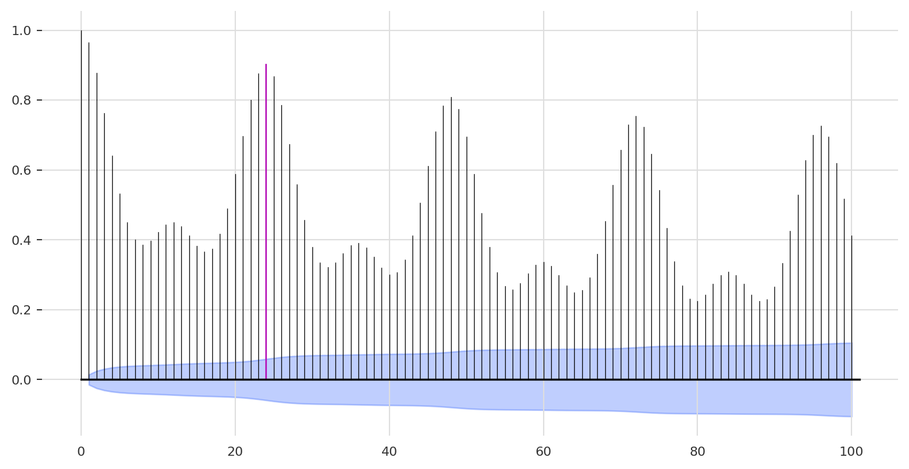
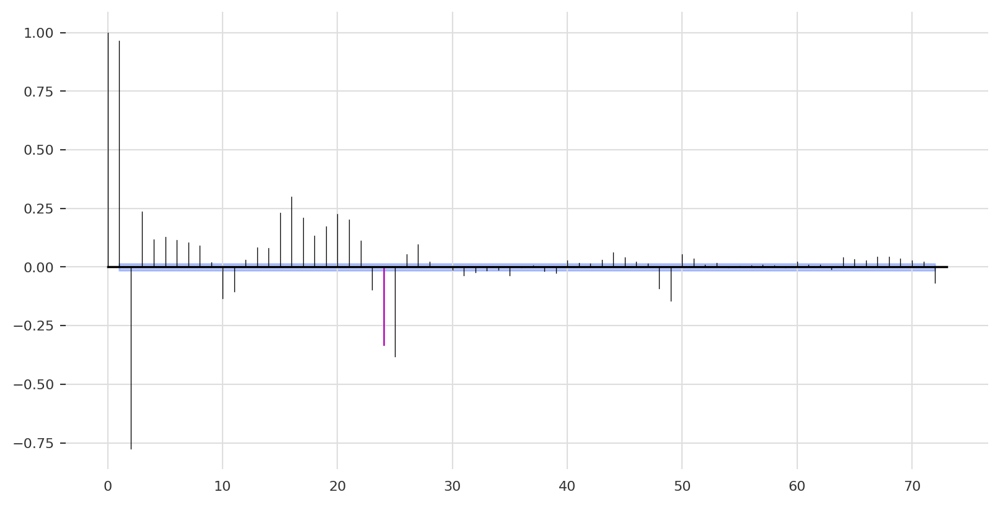
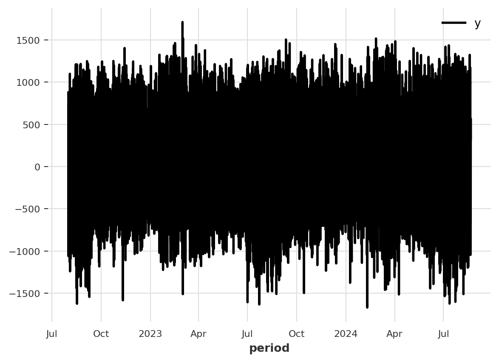

Darts Demo - Forecasting the demand for electricity in California
We will use the same dataset we used in the previous reviews - hourly demand for electricity in California. All the code and Docker settings for VScode are available on the following repository. Here is what we are going to demo:
Loading multiple time series data from a CSV file and reformating it
Train and evaluate multiple forecasting models
We will leave the last 72 hours as a testing partition and use the rest of the data to train the models
Forecast the last 72 hours and score the models’ performance
This is not in-depth tutorial but a short demo. Therefore, it does not includes some steps that you would typically apply in the process of forecasting. The plan to create at some point an in-depth tutorial 😎
Load Libraries
We will start by loading the required libraries:
import pandas as pdimport numpy as npimport datetimefrom darts import TimeSeriesfrom darts.utils.statistics import plot_acf, plot_pacf, plot_histimport matplotlib.pyplot as pltfrom darts.models import LinearRegressionModel, XGBModelfrom darts.metrics import mape
Support for Torch based models not available. To enable them, install "darts", "u8darts[torch]" or "u8darts[all]" (with pip); or "u8darts-torch" or "u8darts-all" (with conda).
Load Data
The data source is the EIA website, and a curated dataset is available on my LinkedIn course - Data Pipeline Automation with GitHub Actions Using R and Python. The data is available on this repository. The datasets are refreshed daily, and you can review the series on the following interactive dashboard. We will use the last two years for the following demonstration:
The raw data comes in the following structure, which includes the series timestamp (period), the provider details (i.e., the subba and subba-name fields), the region (i.e., the parent and parent-name fields), and last but not least, the series values and unites (i.e., value and value-units):
d.head()
period
subba
subba-name
parent
parent-name
value
value-units
0
2018-07-01 08:00:00
PGAE
Pacific Gas and Electric
CISO
California Independent System Operator
12522.0
megawatthours
1
2018-07-01 09:00:00
PGAE
Pacific Gas and Electric
CISO
California Independent System Operator
11745.0
megawatthours
2
2018-07-01 10:00:00
PGAE
Pacific Gas and Electric
CISO
California Independent System Operator
11200.0
megawatthours
3
2018-07-01 11:00:00
PGAE
Pacific Gas and Electric
CISO
California Independent System Operator
10822.0
megawatthours
4
2018-07-01 12:00:00
PGAE
Pacific Gas and Electric
CISO
California Independent System Operator
10644.0
megawatthours
The first step after loading the data is to reformat the object timestamp - the period column using the pandas’ to_datetime function and subset the data to the last 25 months:
The dataset comes with some missing values, the below code loops over the series and imputes the missing values by using a moving average with the previous observations:
subba = d["subba"].dropna().unique()df =Nonefor i inrange(len(subba)): s = subba[i] df_temp = pd.DataFrame(np.arange(start = start, stop = end + datetime.timedelta(hours =1), step = datetime.timedelta(hours =1)).astype(datetime.datetime), columns=["period"]) df_temp["subba"] = s df_temp = df_temp.merge(d, on = ["period", "subba"], how ="left") df_temp = df_temp.sort_values("period")if df_temp["value"].isnull().any(): r = df_temp[df_temp["value"].isnull()]for n in r.index: df_temp.at[n, "value"] = (df_temp.at[n -1, "value"] + df_temp.at[n -24, "value"] + df_temp.at[n -24*7, "value"]) /3 df_temp = df_temp.rename(columns = {"value": "y"})if df isNone: df = df_tempelse: df = pd.concat([df, df_temp])
Next, we will drop the unused columns:
df = df[["period", "subba", "y"]]df.head()
period
subba
y
0
2022-08-01 00:00:00
PGAE
12375.0
1
2022-08-01 01:00:00
PGAE
13233.0
2
2022-08-01 02:00:00
PGAE
14115.0
3
2022-08-01 03:00:00
PGAE
14813.0
4
2022-08-01 04:00:00
PGAE
14737.0
The last reformatting step is to convert the pandas DataFrame to a Darts time series object:
We will use the plot method to visualize the four-time series.
We can use the plot_acf function to plot the ACF output, for example, let’s apply it on the first time series (PGAE):
plot_acf(ts[0], m =24, max_lag =100, alpha =0.05)

We used the m argument to highlight the hourly lag (e.g., lag 24):
Likewise, plotting the PACF:
plot_pacf(ts[0], m =24, max_lag =72, alpha =0.05)

And, plotting the first difference:
ts[0].diff().plot()

Modeling
We will use the below function to loop over every series and:
Split the series into training and testing partition
Train a model using the training partitions
Forecast the corresponding observations of the testing partitions
Score the model performance
Plot the forecast with respect to the actual
def train(model, test_length, input, num_samples): md = {} fc = {} s =int(np.ceil(len(input)/2)) fig, axs = plt.subplots(s, s, figsize=(10, 6), sharex ="row")for i, ax inenumerate(axs.flatten()): train, val =input[i][:-test_length], input[i][-test_length:]print("Fitting Model:", i) md[i] = model md[i].fit(train) fc[i] = md[i].predict(test_length, num_samples= num_samples) m ="MAPE = {:.2f}%".format(mape(val, fc[i]))print(m) val.plot(label ="Actual", ax = ax) fc[i].plot(label="LM Forecast", ax = ax) ax.text(val._time_index[0], 0.95*val.all_values().min(), m, fontsize =8)
As we are going to use a probabilistic forecast, we are going to use the following settings:
seed =12345num_samples =100test_length =72
Where the num_samples variable defines the number of samples to create the probablistics forecast, and the test_length defines the length of the testing partitions. We will set the seed with my favorite seed number, 12345.
Next, we define the first model we are going to test - a simple linear regression model. The model using past lags as inputs (lags - 1, 24, 48, and 168) to model the seasonal component of the series:
As you can see from the forecast plot, the model error rates are ranging between 5.7% to 17.2%. We can definitely improve the models. A quick improvement is to try to add additional lags, focusing on the one top correlated lag from the ACF function:
While the XGBoost was not able to improve the first three series, it provided a significant improvement for the last series, dropping the error rate from 17% to 10%.
Conclusions
In this demo, we demonstrated how to train and test forecasting models with the Darts library using a few simple steps. The Darts library provides a ton of other models and features, such as backtesting and features engineering. A good place to start with Darts is the library documentation that provides detailed tutorials and examples.